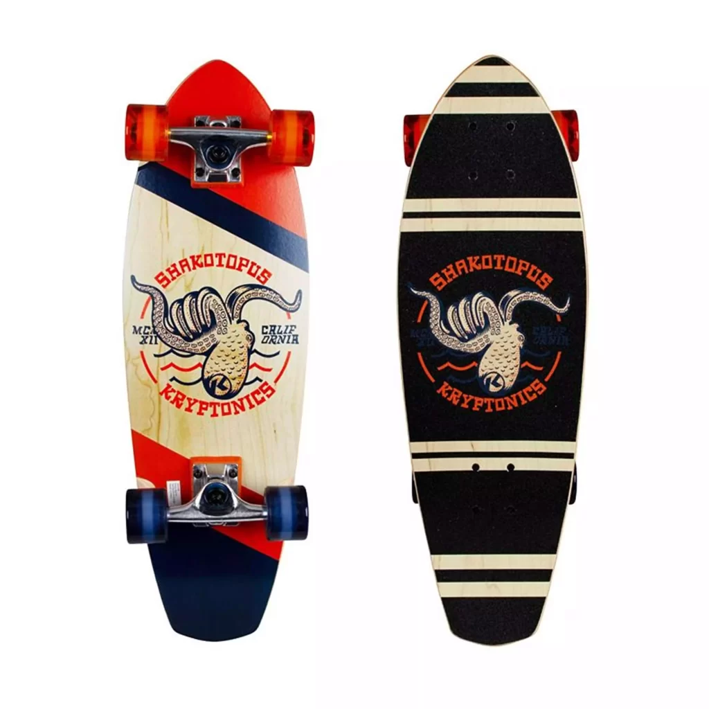
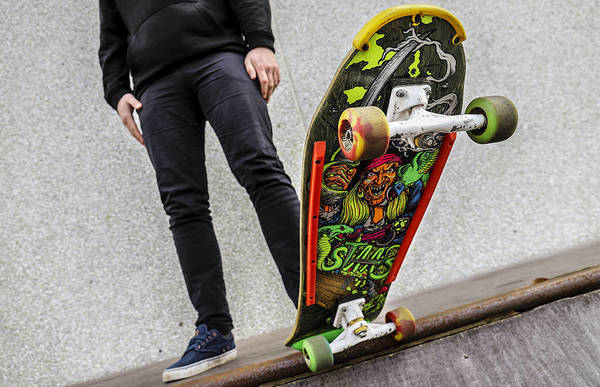

Tipos de skate:
- Longboard:
- Cruise:
- Skateboard clasico:
- Old School:
Más largo, ideal para velocidad, downhill y cruising.

Más compacto que el longboard, cómodo para desplazarse por la ciudad.
Usado para trucos en calles y parques (street y park).

Diseño retro, usado en rampas o bowl skating.
